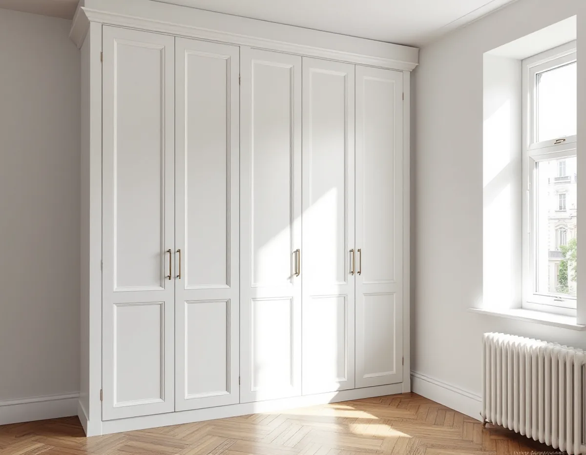
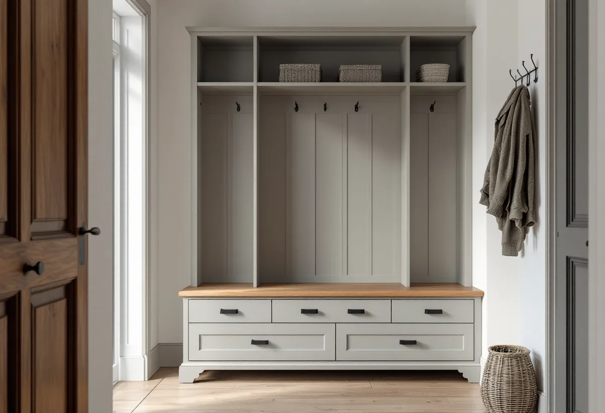
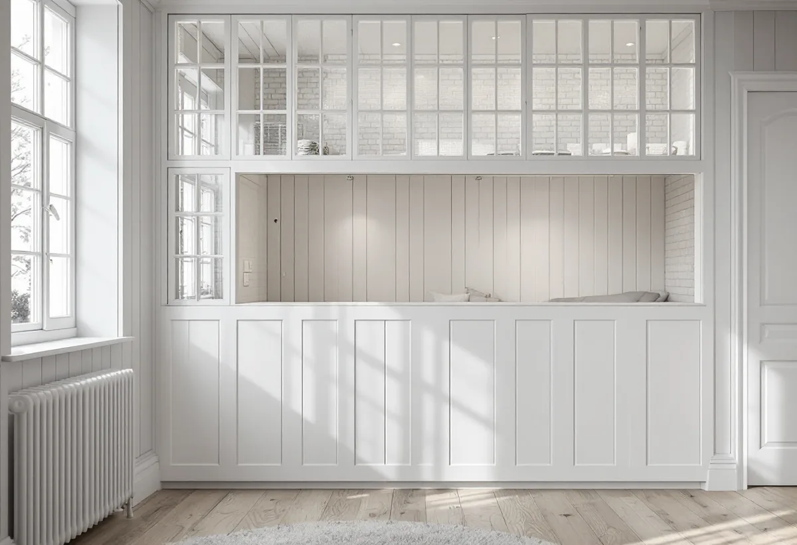

Besök
Gratis besök där vi mäter rummet och går igenom vad du vill få plats med.
Mer än två av tre lägenheter på Kungsholmen har högst två rum och kök. När ytan är liten är det snickeriet som gör skillnaden: en garderob som går ända upp till taket, en bänk med lådor under, en sovalkov som får plats där det förut var en hörna. Vi mäter, ritar och bygger på plats – och tar reda på vad föreningen behöver godkänna innan vi börjar.

Stadens statistik för 2024 visar 42 420 lägenheter i flerbostadshus på Kungsholmen. 5 265 saknar eget kök, 11 314 är ettor och 12 505 är tvåor. Tillsammans är det mer än två av tre lägenheter.
30 598 av stadsdelens bostäder är bostadsrätter. Det betyder att de flesta som vill bygga om något inne i lägenheten har en styrelse att stämma av med – åtminstone när ändringen går utöver ytskikt och lösa möbler.

En färdig garderob har standardmått, men väggarna i ett äldre hus är sällan raka och takhöjden varierar. En platsbyggd garderob mäts mot rummet och kan gå ända upp till taket, runt en fönsternisch eller in under en snedtakshörna. I en liten lägenhet är det ofta de sista 40 centimetrarna under taket som ger mest förvaring.
Vi bygger också sängar på hög höjd med förvaring under, bänkar med lådor i hallen och hyllor i nischer. Allt byggs i stommar som skruvas fast i väggen, så att det kan monteras ner igen om du flyttar och nästa ägare vill ha det på ett annat sätt.
Omkring 1930 byggdes nya stadsdelar efter funktionalismens ideal, i innerstaden framför allt i utkanterna som Fredhäll och Kristineberg. Fristående huskroppar med öppna gröna gårdar blev idealet, och lägenheterna planerades för ljus och luft snarare än för många rum.
I sådana lägenheter är väggarna mellan rummen ofta tunna och ytorna noga utnyttjade från början. Innan vi flyttar en garderob eller bygger in en alkov tar vi reda på vad väggen består av och om det går ledningar i den. Det gör vi från ritningar när föreningen har dem och genom att undersöka väggen på plats.
Enligt bostadsrättslagen (7 kap. 7 §) behöver du styrelsens tillstånd för ingrepp i en bärande konstruktion, ändring av ledningar för avlopp, värme, gas eller vatten, ändring av ventilation, ändring som påverkar brandskyddet och annan väsentlig förändring av lägenheten.
En garderob som skruvas fast i en vägg kräver normalt inget tillstånd. Det gör däremot en ny vägg som påverkar ventilationen – till exempel en sovalkov som stänger in ett rum utan eget ventilationsdon. Staden skriver att man inte behöver göra en anmälan om planlösningen ändras inom lägenheten utan att några tekniska egenskapskrav påverkas, men i en bostadsrätt behövs tillstånd från föreningen för de anmälningspliktiga ändringarna.
En inbyggd garderob framför ett ventilationsdon eller en alkov utan luftväg till resten av rummet ger instängd luft. Vi planerar snickerierna så att tilluft och frånluft fortsätter att fungera, med springor, galler eller avstånd där det behövs.
Samma sak gäller ljuset. I en lägenhet med fönster bara åt ett håll ska en ny vägg eller ett högt skåp inte stänga ute dagsljuset från resten av bostaden. Ofta räcker ett glasparti överst i en alkovvägg för att rummet bakom ska få ljus.

Gratis besök där vi mäter rummet och går igenom vad du vill få plats med.
Skiss med mått, material och var ventilation och el finns.
Vi visar vad som behöver föreningens tillstånd och tar fram underlag.
Stommar och luckor kapas efter rummets mått.
Allt monteras och justeras på plats, med skydd i trapphuset.
Vi går igenom resultatet och städar efter oss.
Bor du i bostadsrätt ger arbete inne i lägenheten rotavdrag enligt Skatteverket, för det som du själv ansvarar för enligt stadgarna – väggar, golv, tak och fast inredning innanför lägenhetens gränser. Avdraget är 30 procent av arbetskostnaden, högst 50 000 kronor per person och år och högst 75 000 kronor tillsammans med rutavdrag. Material och resor ger inget avdrag. Geal drar avdraget direkt på fakturan.
Material som garderobsstommar, luckor och beslag ger inget avdrag, bara arbetet.
Måtten och antalet luckor och lådor, materialet, hur ojämna väggarna är, om el eller ventilation berörs och om styrelsen behöver underlag. Efter besöket får du ett skriftligt kostnadsförslag.
Altan, väggar, dörrar och inredning.
Snickare i Stockholm →Plåttak i stenstaden och funkis i Fredhäll.
Takrenovering på Kungsholmen →Stambyte, stämmobeslut och 30-talshus.
Badrumsrenovering på Kungsholmen →Föreningens stambyte.
Byggföretag på Kungsholmen →Slätputs på funkishus, lagad utan synliga skarvar.
Fasadrenovering på Kungsholmen →Stenhusen, funkishusen och bygglovet.
Fönsterbyte på Kungsholmen →Fönstret i bostadsrätten, insida och beslag.
Fönsterrenovering på Kungsholmen →Stegljud, golvval och styrelsens tillstånd.
Golvläggare på Kungsholmen →Slipa och lacka golvet i bostadsrätten.
Golvslipning på Kungsholmen →Fläkten, kanalen och föreningen.
Köksrenovering på Kungsholmen →Funkislägenheter, stadgar och ROT i bostadsrätten.
Målare på Kungsholmen →Huvar, skorstenar och genomföringar.
Plåtslagare på Kungsholmen →Villorna på Stora Essingen.
Takbyte på Kungsholmen →Ny tapet på putsade lägenhetsväggar.
Tapetsering på Kungsholmen →Hela lägenheten från golv till tak.
Totalrenovering på Kungsholmen →